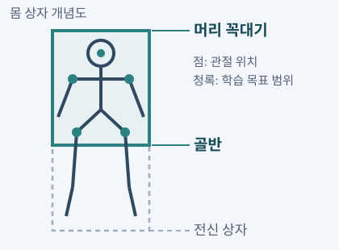

담당 역할 및 개발 범위
데이터공개·자체 영상
사람·관절 정답 정리
→사람·관절 정답 정리
학습검출·자세 모델
조건별 후보 비교
→조건별 후보 비교
검증정확도·오류
채택 여부 판정
→채택 여부 판정
적용M1 실행 확인
짐벌 제어 시험
짐벌 제어 시험
열화상 학습 데이터 구성·모델 평가와 짐벌 제어를 맡았다
열화상 적응을 위해 사전학습 특징에서 시작 · m 개별 설정의 최초 선택 이유는 미확인 · 설정 근거

실측 262 · 1,074 · 4,196 · 10,491장 / 빈 점은 직선 보간 추정 / 이미지 수와 업데이트 수가 동시 증가 · 스케일링 참고: Hestness et al.
차량 시점 · 사람·차량 상자
검출기 학습 / 사진은 별도 시험 화면

실내·야외 사람 · 상자와 관절
자세 학습 / 공식 예시, 사용 여부 미확인

실제 운용 거리·장면의 상자·ID·관절
라벨 편집 화면 / 선택 부위 검수 필요
공개 예시는 출처별 실제 화면 · 사진 속 특정 프레임의 프로젝트 학습 사용은 확인되지 않음 · 데이터·설정 근거

캡처 속 선택 부위는 검수 필요 상태 · 해당 프레임의 학습 사용 여부 미확인

그림은 원리 설명용 개념도
관절 부족·맞춤 실패 시 COCO 전신 정답 상자 높이 ×0.531 · 폭 ×0.681 (중앙값 32,951명)
11/15 전처리 보완 · 기존 F/O 가중치에는 소급 적용 안 됨 · 장치 후처리 비율과 별도 · 라벨 변환 코드 · 비율 측정 · 템플릿 코드
학습: 200신원 · 3,563 crop · triplet 3,000 step
잘림 전 18% · 가림 전 65%

TMOT 386/432 공통 · 사전 유지력 기준 미통과
실험별 원본 epoch loss 미확인 · 별도 실험 · TMOT/CAMEL은 과거 학습 자료와 겹침 · 독립 실카메라 ReID 정확도 미측정


같은 FLIR 개발 영상에서 가림 전후 ID를 비교 · 보이는 흰 상자는 정답 위치 · 후보 구성 선택에 사용한 영상


장치 재생 화면 캡처 · 서로 다른 프레임이므로 ID나 성능의 직접 비교가 아님
무릎·하체 가림 추정의 정확도는 위 표본에서 검증되지 않음 · 구현·평가 근거